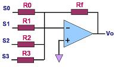
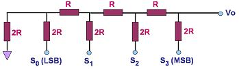

Digital-to-Analog Converters (DAC's)
A
digital-to-analog converter,
or simply
DAC,
is a semiconductor device that is used to convert a digital code into an
analog signal. Digital-to-analog conversion is the primary means by
which digital equipment such as computer-based systems are able to
translate
digital data into real-world signals that are more understandable to or
useable by humans, such as music, speech, pictures, video, and the like.
It also allows
digital
control
of machines, equipment, household appliances, and the like.
A typical
digital-to-analog converter outputs an analog signal, which is usually
voltage
or
current,
that is
proportional
to the value of the digital code provided to its inputs. Most DAC's have
several digital input pins to receive all the bits of its input digital
code in
parallel
(at the same time). Some DAC's, however, are designed to receive the
input digital data in
serial
form (one bit
at a time), so these only have a single digital input pin.
A simple DAC may be
implemented using an op-amp
circuit known as a summer, so named because its output voltage is the sum
of its input voltages. Each of its inputs uses a resistor of different
binary weight, such that if R0=R, then R1=R/2, R2=R/4,
R3=R/8,.., RN-1=R/(2N-1). The
output of a summer circuit with N bits is:
Vo =
-VR (Rf / R) (SN-12N-1 + SN-22N-2+...+S020)
where VR
is the voltage to which the bit is connected when the digital input is
'1'. A digital input is '0' if the bit is connected to 0V (ground).
A 4-bit summer circuit is
shown in Figure 1.
|
 |
|
Figure 1.
An Op Amp Summer Circuit Used as a DAC; where R0 =
2 R1 = 4 R2 = 8 R3
|
One problem with this circuit
is the wide range of resistor values needed to build a DAC with a high
number of digital inputs. Putting thin-film resistors that come in a wide
range of values (e.g., from a few kΩs
to several MΩs) on a single semiconductor chip can be very difficult,
especially if high accuracy and stability are required.
A better-designed and more
commonly-used circuit for digital-to-analog conversion is known as the
R-2R ladder
DAC, a 4-bit version of which is shown in Fig. 2. It consists of a
network of resistors with only two values, R and 2R. The
input SN to bit N is '1' if it is connected to a voltage VR
and '0' if it is grounded. Thevenin's Theorem may be applied to prove that
the output Vo of an R-2R ladder DAC with N bits is:
Vo =
VR/2N (SN-12N-1 + SN-22N-2+...+S020).
Thus, the output of the R-2R
ladder in Figure 2 is Vo = VR/24
(S323+S222+S121+S020)
or Vo = VR
(S3 / 2 + S2 / 4 + S1
/ 8 + S0 / 16) .
In effect, contribution of each bit to the analog output is proportional to
its binary weight.
|
 |
|
Figure 2.
A 4-bit R-2R Ladder DAC |
See also:
DAC Parameters;
ADC's;
Op Amps
HOME
Copyright
©
2005
www.EESemi.com.
All Rights Reserved.